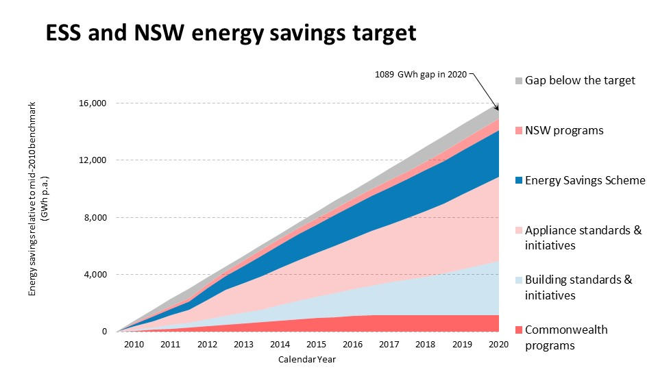
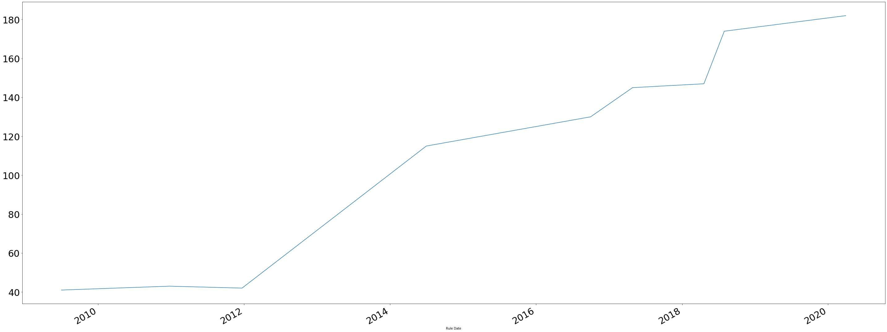
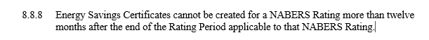
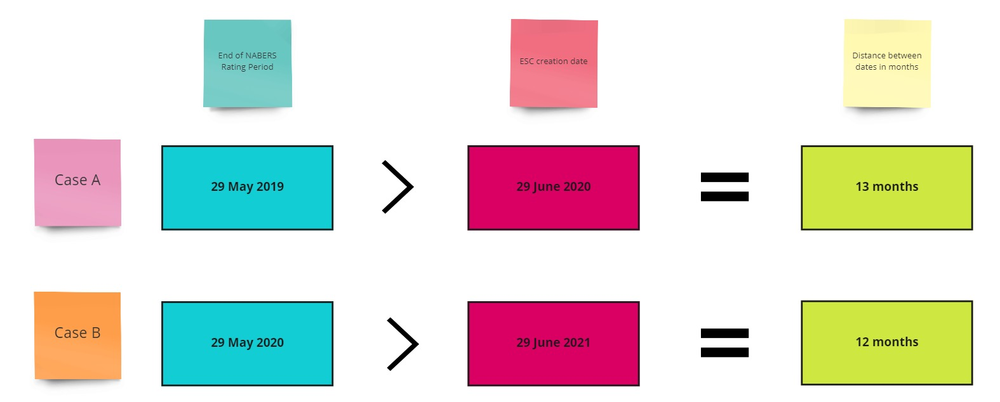
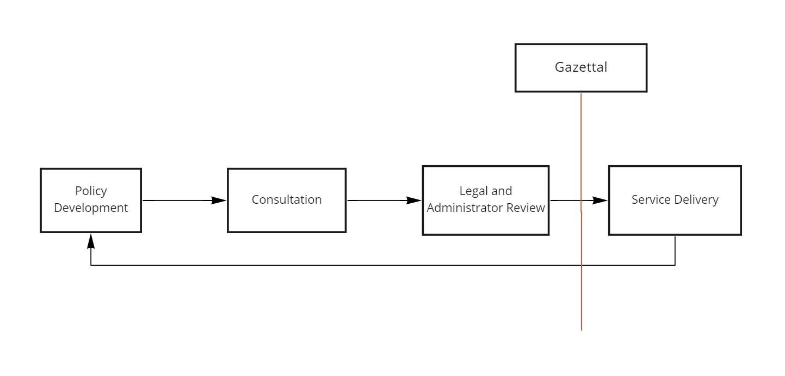
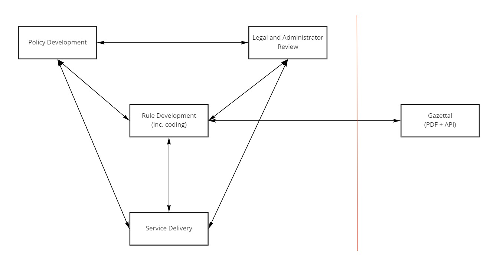

Rules as Code and the Energy Savings Scheme
(and beyond the Energy Savings Scheme!)
Liam McCann
Project Officer, Energy Savings Scheme (Sustainability Programs Branch, DPIE)
Contents
Introductions - who am I, what is the ESS?
What we've done so far
What we've learned
What we're going to do next
Who am I?
- My name's Liam McCann - I work as a Project Officer at the Sustainability Programs Branch, in DPIE.
- I do a lot of work around the digital delivery of the Scheme, modernisation and streamlining of the Scheme, and so on
- Before DPIE, I was at UTS' Institute for Sustainable Futures in a marketing/comms/research mgmt role for 2 1/2 years
- And before that, I did a BA (Modern History and Philosophy) and a MResearch (Modern History and Cognitive Science)
- When I'm not doing this, I play guitar, talk about post-punk, play board games and video games, watch puroresu, read about postmodernism, learn Norsk, climb mountains once in a while and more
What is the Energy Savings Scheme?
In a sentence, the Energy Savings Scheme (Scheme) provides financial incentives to create energy savings, through conducting energy savings activities.
The aim of the Scheme is to encourage investment in energy efficiency, lower energy usage and lower energy costs, across households, business and industry.
The Scheme is coordinated by DPIE and administered by the Independent Pricing and Regulatory Tribunal (IPART), who sit within DCS.
A simplified flow of how the Scheme works

Success of the Scheme to date
Since the beginning of the Scheme in July 2009, it has achieved:
28,000 GWh of energy savings (through to 2028)
$6.2 billion in energy bill savings (through to 2028)
29 million Energy Savings Certificates (since 2009)
Statistics current to 26 May 2020.
In context of NSW's overall energy savings targets...

The ESS and Rules
The activities eligible for ESS incentives are defined within the Energy Savings Scheme Rule (ESS Rule).
DPIE updates the Rule approximately yearly, to continue incentivising better than best practice.
A quick view of how the Rule has evolved over time.

The future of the ESS
The Energy Security Safeguard (Safeguard) was announced in late 2019, with two major components:
An expansion of the existing efficiency Scheme, with increased energy savings targets
The introduction of a new demand reduction scheme, with a new Rule for incentivising demand reduction activities
Read more about the Safeguard in the NSW Electricity Strategy.
In summary
The Scheme incentivises energy savings activities which improve energy efficiency
It makes significant contributions to NSW's energy savings targets
There's a lengthy, complex Rule which defines what's eligible for incentives
The new Safeguard is going to expand the scope of the Scheme
Continuing current Scheme delivery makes it difficult for us to achieve our new targets - which means we need to make it easier to access the Scheme
Reducing the complexity involved with the Rules, and enabling digital delivery of the Rules eases access to the Scheme!
What we've done so far is...
Worked with DCS to learn how to build a Rules as Code coding environment.
Coded the NABERS method of the Rule (for Offices and Apartments).
Built test cases for the use of this method.
Reviewed the code with Legal.
Started the process of building a proof of concept webform.
Started planning the next sections of the ESS to code.
A simple example of the value of our current work.
There's a term "Counted Energy Savings" in the NABERS method of the ESS.
It appears twice - and it's defined slightly differently both times it appears.
The difference in meanings is summarised below.

Strictly following the existing definitions of Counted Energy Savings within the Rule, it would be impossible to calculate ESCs within NABERS because of this ambiguity - the machine would be unsure of what definition to use.
What's so special about months?
A month is a common concept that appears everywhere in law and business.
It appears in the ESS a few times, such as in 8.8.8:
But what exactly is a month?
Let's see what the law says.
This is the definition of months in the Interpretations Act.
The legal interpretation of this definition.
So for (a),
a month begins on 12:00:01am on 15 July, and ends on 11:59:59pm on 14 August. Next month begins at 12:00:01am on 15 August, etc.
For (b),
a month begins on 12:00:01am on 31 August, and ends on 11:59:59pm on 30 September. Next month begins at 12:00:01am on 1 October, ends 11:59:59pm on 31 October, etc.
This functionality is difficult to replicate in code.
What we did with this information.
We built a function to replicate this functionality - which we did.
There's an interesting finding we found, in codifying the strict legal interpretation of a common term and applying test cases to it.
Here's a test case that looks at 8.8.8, specifically at leap years.

Benefits beyond making the code publicly available:
Establish hierarchy, structure and connections between terms used throughout the Rule
to ensure consistency in the meaning of these terms
Benefits beyond making the code publicly available:
Testing the interpretation of the rules with non-subject matter experts
to ensure clarity of interpretation across the different stakeholder groups
Benefits beyond making the code publicly available:
Test coding the written rules into machine-readable language
to remove ambiguity for when users do the same
We've found that coding the rules is the easy part.
But it’s only part of developing Better Rules.
Better Rules
The Better Rules framework provides a template for how we can do rule changes
and
Coding the rules will transform how the rules operate and are implemented.
The current rule change process is very linear.
Here's a simplified version of the current process.
https://www.digital.govt.nz/dmsdocument/95-better-rules-for-government-discovery-report/html
https://trends.oecd-opsi.org/embracing-innovation-in-government-global-trends-2019.pdf
https://trends.oecd-opsi.org/embracing-innovation-in-government-global-trends-2019.pdf
The end goal is to use an integrated Better Rules approach to build a better end product.
The key is integrating the perspectives and knowledge of different experts to ensure the rules deliver the best outcome for the user, following rule implementation.
What's next?
Testing this prototype with NABERS stakeholders
Begin scaling this approach throughout the rest of the current ESS Rule
Integrate the Better Rules approach into Safeguard development and delivery
Thank you!
Happy to take any questions you may have!